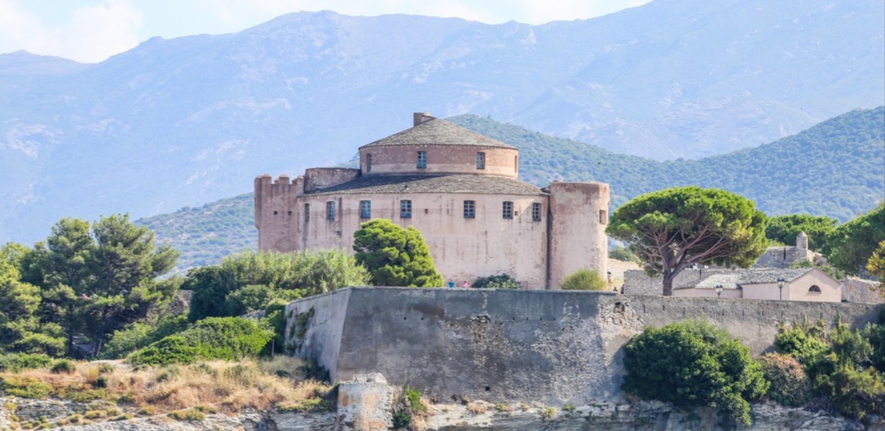

Az 1440-ben, Janus da Campofregoso doge parancsára alapított citadella a genovai katonai építészet egyik legkarakteresebb és legfontosabb észak-korzikai erődítménye. Saint-Florent és a környező Nebbio vidékének védelme kulcsfontosságú volt a Genovai Köztársaság számára, hiszen az erőd feladata a belső, termékeny mezőgazdasági területekre vezető utak lezárása, valamint a stratégiai fontosságú tengeri kereskedelmi útvonalak állandó ellenőrzése volt. A masszív, tüzérségi állásokkal megerősített kőfalak és a bástyák elhelyezkedése biztosította, hogy a védők számára a tenger felől érkező fenyegetésekből sehol se maradjon holttér. Aki ezt a magaslatot uralta, az szinte teljes ellenőrzést gyakorolt az északi partvidék áru- és csapatmozgásai felett.
A citadella legfőbb katonai erénye a mai napig vizuálisan is lenyűgözi a látogatót: a falak tetejéről a teljes Saint-Florent-i öböl, a modern jachtkikötő és a város szerkezete szinte élő, háromdimenziós térképpé alakul. A magaslati pozícióból tökéletesen kirajzolódnak a természetes áramlatok, a biztonságos hajózási folyosók és azok a védett, csendes vízfelületek, ahol a flotta horgonyt vethetett a viharok elől. Ez a páratlan panoráma világosan megmutatja, hogy a város fejlődése és tengeri dominanciája mennyire elválaszthatatlanul összefonódott az erőd elrettentő erejével és megfigyelő funkciójával, amely évszázadokon át a térség legbiztosabb bástyájaként szolgált.
Az erődítmény nemcsak hadtörténeti objektumként, hanem a korzikai táj esztétikai csúcspontjaként is kiemelkedő jelentőségű. A masszív, sárgásbarna kőfalak és a Földközi-tenger mély kékjének éles kontrasztja a nap járásának megfelelően folyamatosan átalakul. Míg a déli órákban a tűző napfény keményen és világosan rajzolja ki a katonai építészet szigorú vonalait, addig a késő délutáni és alkonyati órákban a falak meleg, aranybarna fénybe burkolóznak. Ez az állandó vizuális játék drámai hangulatot kölcsönöz az ódon komplexumnak, amely fenségesen magasodik a part menti nyüzsgés és a modern korzikai elegancia fölé.